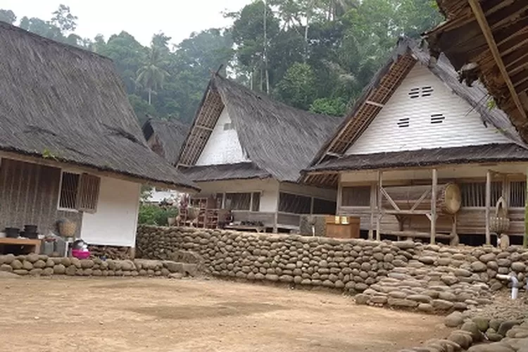
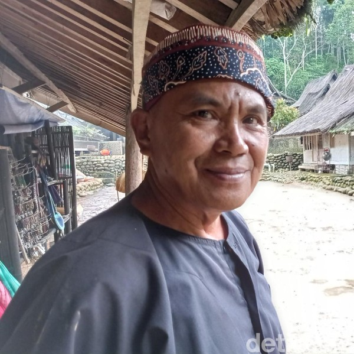

Kampung Naga téh hiji kampung tradisional anu aya di Kecamatan Salawu, Kabupaten Tasikmalaya, Jawa Barat.
Kampung ieu dikenal ku kahirupan masyarakatna anu masih ngagem adat istiadat jeung budaya Sunda, sarta ngawangun hirup kalayan harmoni jeung alam sabudeureunana.
Kampung Naga diperkirakeun geus aya ti ratusan taun ka tukang. Dina jaman baheula, kampung ieu téh dijaga pisan ku karuhun jeung batur-batur masyarakatna,
pikeun ngajaga kabersihan alam, kayaan sosial, jeung kaidah agama anu jadi dasar hirup masarakatna. Dina kapercayaan masyarakat Kampung Naga, alam téh jadi
bagian penting dina kahirupan maranéhanana, sareng ngarawat alam téh mangrupakeun bagian tina ibadah..
Struktur organisasi

Ketua adat Kampung Naga disebut Kuncen. Kuncen adalah pemimpin adat yang bertugas sebagai pemangku adat dan memimpin upacara adat.
Ciri khas rumah adat di Kampung Naga adalah Adapun jumlah bangunan di Kampung Naga saat ini adalah 113 bangunan. Atap-atap bangunan disini terbuat dari ijuk.
Menurut sesepuh Kampung Naga, Ade Suherli, warga Kampung Naga harus senantiasa mempertahankan gaya hidup mereka,
yaitu hidup bersama dengan alam.
Aturan/Kapamalian kampungna
Di Kampung Naga, sebuah desa adat yang terletak di Jawa Barat, terdapat sejumlah aturan atau pamalian yang masih dipatuhi oleh masyarakatnya hingga sekarang. Kampung Naga dikenal dengan keberhasilan menjaga tradisi dan adat istiadat Sunda yang telah turun-temurun.
Berikut beberapa aturan atau pamalian yang ada di Kampung Naga:
Aturan dalam Kehidupan Sosial:
Gotong royong: Masyarakat Kampung Naga sangat menjunjung tinggi semangat gotong royong. Setiap pekerjaan, baik itu perbaikan jalan, pembangunan rumah, atau kegiatan lainnya, dilakukan bersama-sama.
Patuhi aturan adat: Setiap warga wajib menghormati dan mengikuti aturan adat yang berlaku di kampung. Ini termasuk aturan mengenai tata cara berpakaian, pergaulan, dan berinteraksi dengan sesama warga.
Aturan dalam Kehidupan Beragama:
Melaksanakan ibadah: Masyarakat Kampung Naga menganut agama Islam dan menjalankan ajaran agama dengan penuh khidmat. Setiap keluarga diwajibkan untuk melaksanakan ibadah lima waktu.
Selamatan dan ritual adat: Beberapa ritual adat dan selamatan juga dilakukan oleh warga, seperti peringatan hari besar Islam atau acara syukuran.
Aturan dalam Membangun dan Merawat Rumah:
Rumah harus mengikuti aturan adat: Rumah-rumah di Kampung Naga dibangun dengan mengikuti bentuk dan struktur yang sesuai dengan tradisi Sunda, dengan bahan alami seperti bambu dan kayu, serta atap yang memiliki bentuk melengkung khas.
Posisi rumah: Rumah-rumah di Kampung Naga biasanya menghadap ke arah selatan, sebagai bagian dari simbol keselarasan dengan alam dan ajaran leluhur.
Peraturan Mengenai Lingkungan:
Pelestarian alam: Masyarakat Kampung Naga sangat peduli terhadap pelestarian alam. Mereka menjaga kebersihan dan kelestarian lingkungan sekitar, termasuk hutan dan sungai yang ada di dekat kampung.
Tata kelola sampah: Sampah di Kampung Naga dikelola secara bijaksana, dengan cara memilah dan membuang sampah pada tempatnya. Tidak ada sampah yang dibuang sembarangan.
Aturan dalam Berpakaian:
Berpakaian adat: Masyarakat Kampung Naga sangat menjaga tata cara berpakaian sesuai dengan tradisi Sunda, terutama pada saat acara adat atau upacara tertentu. Mereka mengenakan pakaian yang mencerminkan budaya dan identitas mereka.
Pendidikan dan Kewajiban Masyarakat:
Pendidikan di rumah: Di Kampung Naga, pendidikan masih sangat berhubungan dengan nilai-nilai adat dan tradisi. Anak-anak diajarkan untuk menghargai budaya lokal, menjaga kerukunan, dan berperilaku sopan.
Kewajiban membantu sesama: Setiap warga diwajibkan untuk saling membantu, baik dalam hal pekerjaan maupun ketika ada yang mengalami kesulitan, sebagai bagian dari nilai-nilai kebersamaan.
Upacara adat di Kampung Naga, Tasikmalaya, Jawa Barat, meliputi upacara Menyepi, Hajat Sasih. Upacara Menyepi Upacara Hajat Sasih